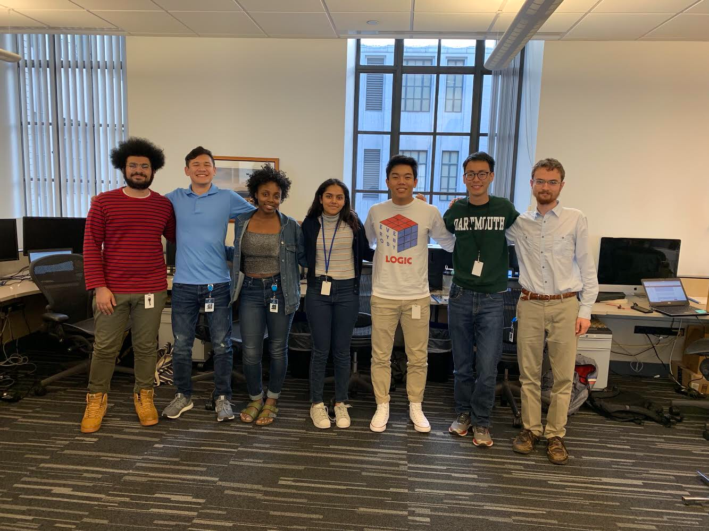

Work Experience
Pearson K12 Learning
During Summer of 2019 I worked at Pearosn K12 in Boston. I worked on a variety of different projects and expanded my knowledge in different fields of Software Engineering.
At first I worked closely with the DevOps team to create python tools that assisted in monitoring the company's network. I used Python to build Nagios Core Service to notify 100+ engineers when any of 500+ SSL Certificates were close to expiring. I also used Python to write a script to check what CDN was being used for the 100+ endpoints in order to assist in data migration
After finishing work on these tools I was asked to create a proof of concept application to replace a current tool available to students. I also used React Native, Google Vision, Express.js and Node.js to build a photo-recognition app to scan 1000+ textbook pages from 100+ textbooks for links and additional material for a learning tool.
Rutgers Department Grader
Since Sophomore year I worked with the professors in the mathematics department as well as one other student in order to grade assignments and provide feedback on the topics that need more coverage in lecture.